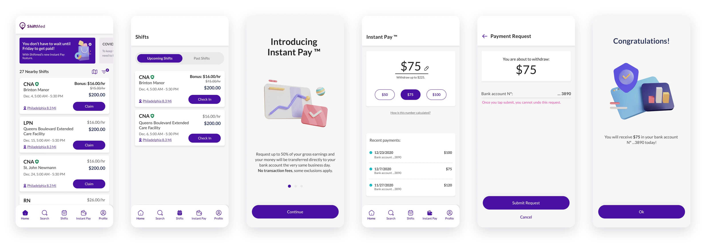
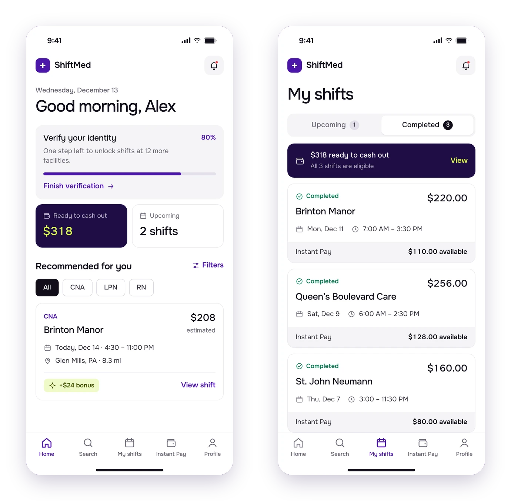
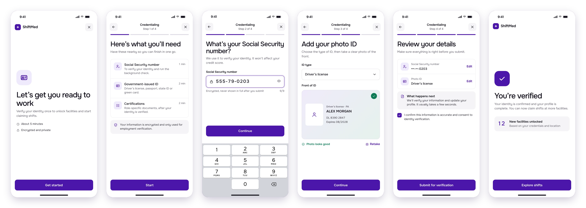
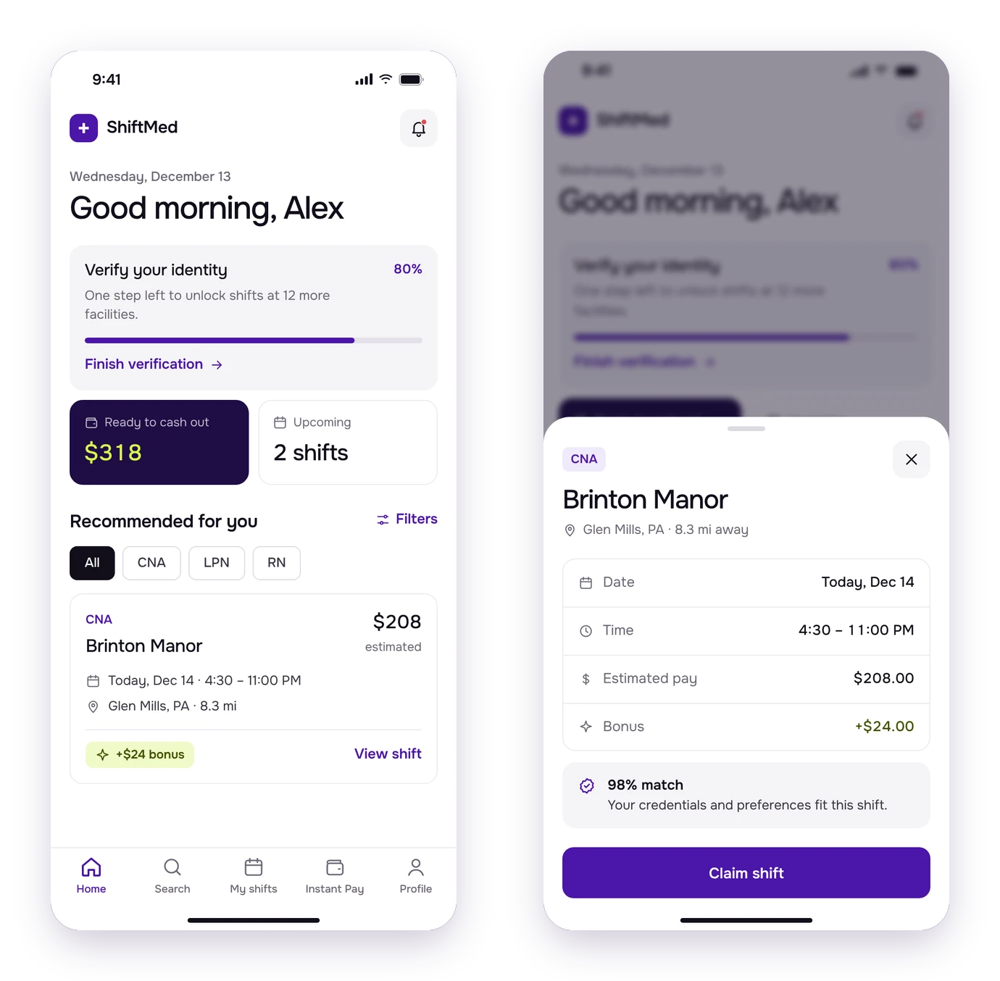
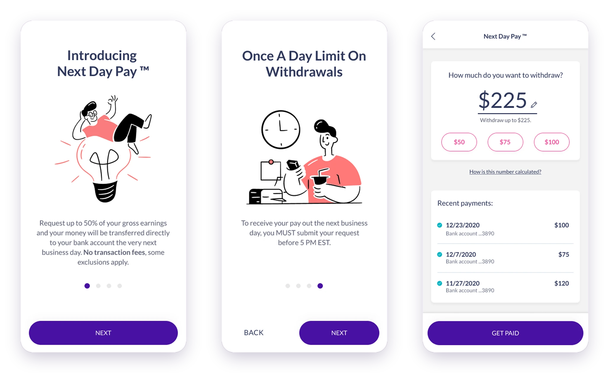
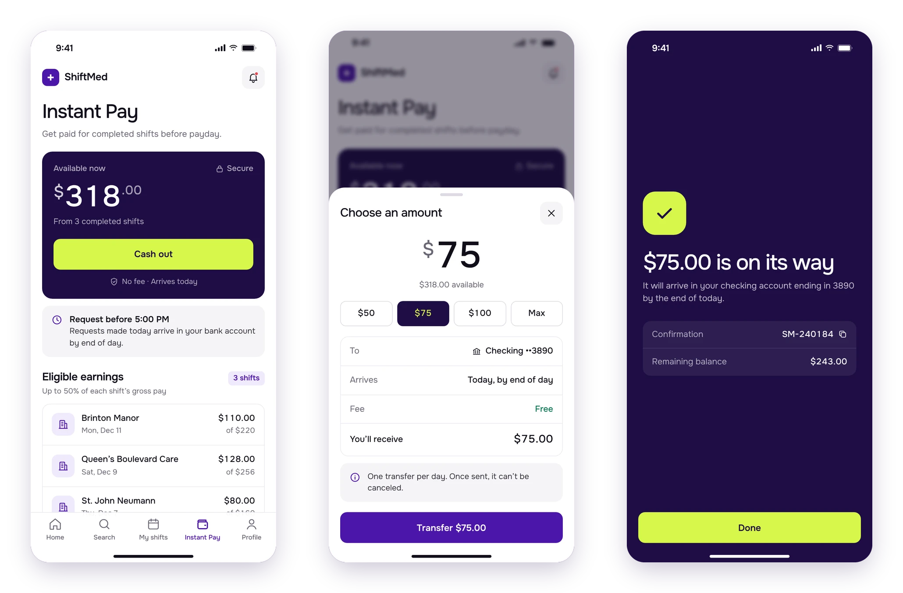

Case study · Healthcare · On-demand staffing
ShiftMed: from download to first shift.
As freelance Lead Product Designer, I redesigned ShiftMed’s mobile app for healthcare workers: a modernized interface, a credentialing flow people could actually finish, and Instant Pay, so they could get paid for a shift the same day.

Context & Problem
Most people who downloaded the app never finished credentialing.
ShiftMed is an on-demand staffing platform that connects healthcare facilities with nurses and caregivers, with a show rate above 90%. Schedulers and directors of nursing post shifts; CNAs, LPNs and RNs claim them from the app.
A heuristic analysis and user research showed that a large share of the people who downloaded the app never completed credentialing, the step required before claiming a shift. An outdated look and missing features made it worse.
The root cause was the flow itself: after passing a quiz, caregivers could submit any credential at any time, so they didn’t know what to do next or when they could claim a shift, and the credentialing team spent time on documents that didn’t matter yet.
Payments were the other leak: many caregivers worked a few shifts and then left, because pay wasn’t fast or transparent enough for people living paycheck to paycheck.
What I set out to do:
- Finish credentialingMore people getting from download to their first shift.
- Modernize the appA clearer, more accessible interface.
- Get paid fasterSame-day access to earned wages, without extra cards or apps.
What I designed:
- Credentialing flowStep by step: SSN, ID, TB test, physical and onboarding paperwork.
- New home feedShift cards that are easier to scan and compare.
- NavigationA navbar instead of a hamburger menu.
- Instant PayRequest part of your earnings and receive them the same day.
Research & Discovery
Listening to heavy users.
I worked with heavy users and caregivers to understand their main pain points, combining a heuristic evaluation with interviews. We benchmarked gig and mobility apps (Uber, Cabify, DiDi) and similar staffing tools for how they collect documents, and wallets like Paylocity and Venmo for withdrawals. Then we tested clickable prototypes with internal users.
Credentialing
Too many documents with unclear steps. People started, got lost and didn’t come back to finish.Payments
Waiting for payday, or depending on pay cards and payroll apps. Competitors already offered earned-wage access.The process
How I worked.
- 01 DiscoveryHeuristic evaluation, interviews and benchmark.
- 02 Wireframes and prototypeThe whole credentialing flow mapped, screen by screen.
- 03 Test and refineTests with internal users, iterations, then hi-fi designs.
Design
A cleaner feed, and a flow you can finish.
I combined aesthetic and functional changes, all driven by what I saw in usability tests: modernize the look and feel, improve key features and streamline credentialing to raise completion.


- More accessibleA more legible font, larger sizes, and colors that meet contrast standards.
- Cleaner UIFewer elements and unified colors, for a more consistent experience.
- Clearer communicationThe top of the feed highlights what matters: profile progress, Instant Pay, updates.
Decisions
Decisions that shaped the app.
1. Credentialing as a guided, step-by-step flow
Instead of a long list of requirements, the flow asks for one document at a time, with a progress bar, a clear explanation of why each item is needed, and camera capture right inside the app.
The wizard only asks for the four documents that unlock shifts (SSN, ID, TB test and annual physical) and doesn’t let you skip them.
Testing shaped the details: typing the Social Security number instead of photographing the card (faster, and no blurry photos), numbered steps so you know how many are left, and a bottom sheet to choose camera or gallery, within thumb reach.
Every step ends with a small celebration: “You’re one step closer to getting the shifts you want.”

2. A navbar, and cards you can open
We replaced the bottom sheet with a navbar (Home, Search, Shifts, Instant Pay, Profile) and made feed cards clickable, to show facility details and photos before claiming a shift.

3. From Next Day Pay to Instant Pay
The feature started as Next Day Pay: request part of what you earned and get it the next business day, with no pay card or extra payroll apps. It came with rules (up to 50% of gross earnings, only shifts with check-in, check-out and a supervisor signature, once a day, before 5 PM EST). We first explained them in a modal, but in testing nobody saw it; a short wizard worked much better.
The first version followed Paylocity and its interactions weren’t clear. Testers kept mentioning Venmo, so we moved that way: we showed only recent payments, removed an “eligible shifts” section that confused people, and made the amount tappable with quick options, because that’s how people expected to edit it. Later, the feature evolved into Instant Pay.


Prototype.
Credentialing and Instant Pay, end to end.
Outcomes
What changed, and what I learned.
The redesign moved the metric that mattered most, and the qualitative signals backed it up.
- Higher credentialing completion30% more users finished the credentialing requirements after the redesign.
- More engagementUsability tests showed the changes improved interaction and time spent in the app.
- User satisfactionPositive responses from heavy users and caregivers in interviews and tests.
- Less is moreBoth features got better when we removed things: steps, sections and extra screens.
- Internal testing has biasInternal users helped us move fast, but they aren’t caregivers. Next time: bring in testing vendors to reach real users.